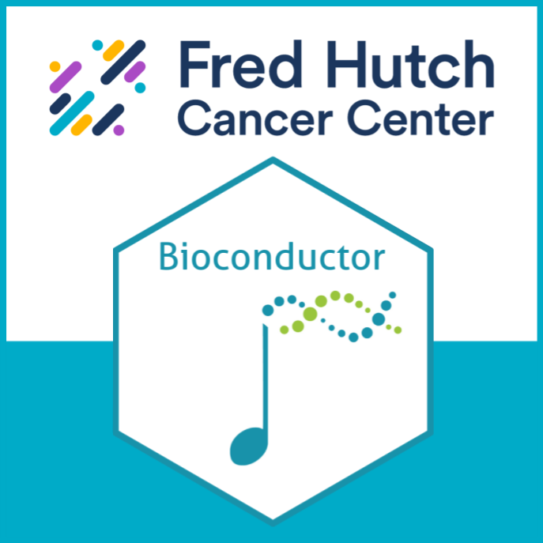

graph TD A[Reading in Data] --> B B[Metadata] --> C subgraph DESeq2 C[Data Exploration] --> D D[Review Experiment Design] --> E end E[Filtering and Normalization] --> F F[Dispersion Estimation] --> G G[Differential Expression] G --> H[Annotation and Gene Set Analysis] G --> I[Clustering and Visualization] G --> J[Pathway and Network Analysis] classDef box fill:#DDD class DESeq2 box
Bioconductor for Genomics
This course will introduce you to the basic data structures and genomic data analysis in Bioconductor. Specifically, we will focus on the basics of RNAseq analysis, including differential expression, annotation, and gene set analysis. We will also focus on loading data and metadata into data structures such as SummarizedExperiment. By the end of this course, you should be familiar with a basic RNAseq analysis workflow utilizing RNAseq count data.
Please note that this course requires the Intro to R course as a prerequisite, or the equivalent course. Please note that this course does not cover RNAseq workflows such as MultiQC and alignment.
0.1 Learning Objectives
- Explain and Utilize Bioconductor data structures such as
SummarizedExperimentto integrate metadata and assay data in your analysis - Explore, QC, and clean a RNAseq dataset
- Utilize Differential Expression analysis on an RNAseq dataset using Bioconductor Packages
- Identify and Annotate Gene Sets for downstream analysis
- Load data from RNAseq experiments into Bioconductor
0.2 Instructors
If you need to schedule some time to talk, please schedule with Ted.
- Ted Laderas, Director of Training and Community, Office of the Chief Data Officer
- Chris Lo, Data Science Trainer, Office of the Chief Data Officer
0.3 Introductions
In chat, please introduce yourself:
- Your Name & Your Group
- What you want to learn in this course
- Favorite Spring activity
0.4 Course Outline
| Week | Date | Topic | Video | Office Hours |
|---|---|---|---|---|
| Week 0 | - | Concepts of RNA sequencing | ||
| Week 1* | April 23 | Bioconductor Data Structures / What you need to know about S4 classes / SummarizedExperiment (Ted) |
||
| Week 2 | April 30 | Experimental Design / QC / Visualization (Chris) | ||
| Week 3 | May 7 | Differential Expression (Ted) | ||
| Week 4* | May 14 | Gene sets and annotation (Ted) | ||
| Week 5 | May 21 | Installing Bioconductor Packages / Loading Data into Bioconductor Data Structures (Ted) | ||
| Week 6* | May 28 | Wrap up / Running Bioconductor at FH / Using fHR (Ted) |
*Ted on Campus
0.5 Format of Class
I will teach online and in person on the starred(*) weeks above, though you have the option of attending in the DaSL Lounge (Arnold M1-B406) when I am not there, which will have snacks and drinks available. Chris will be hosting in person on these dates.
I will be asking you to ask/answer questions in Teams chat, so I highly recommend that you sign into the Teams meeting (muted) if you are in-person.
I will host co-working sessions/office hours on Monday mornings (invite will be sent out), which is an opportunity to work on exercises and ask questions.
Please ask questions in the Teams Classroom Chat outside of class (there is the General). Your questions are helpful to others and helps us avoid answering the same questions over and over again. If you know the answer to a question, please try and answer the question. We are all learning together.
0.6 Weekly Check In
Weekly Check In Form - please fill out to let us know if you have any issues or want to share what you’ve learned. We look at the answers in aggregate and we anonymize responses (unless you want us to know).
0.7 Posit Cloud Project
You will receive an invite to the Posit.cloud project where we will do our assignments. Later in class, we will focus on installing Bioconductor on your own machines.
0.8 Posit Cloud Intro
Here is a short video introducing you to the Posit Cloud interface if you haven’t worked with it before.
0.9 Culture of the course
- Learning on the job is challenging
- I will move at learner’s pace; we are learning together.
- Teach not for mastery, but teach for empowerment to learn effectively.
We sometimes struggle with our data science in isolation, unaware that someone two doors down from us has gone through the same struggle.
- We learn and work better with our peers.
- Know that if you have a question, other people will have it.
- Asking questions is our way of taking care of others.
We ask you to follow Participation Guidelines and Code of Conduct.
0.10 Badge of completion

We offer a badge of completion when you finish the course!
What it is:
- A display of what you accomplished in the course, shareable in your professional networks such as LinkedIn, similar to online education services such as Coursera.
What it isn’t:
- Accreditation through an university or degree-granting program.
Requirements:
- Complete badge-required sections of the exercises for 4 out of 5 assignments. We’ll cover this in class.
- Submit assignments (rendered HTML) via Teams Classroom. All assignments must have a short 2-3 description of the code and what you accomplished, or will not be accepted.
- Assignments are due at 11:59 PM the Tuesday before class.
0.11 Acknowledgements
This course is derived from the following sources: